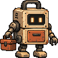

STATIC SKIN EXAMPLE · Actual supplied PNG skins on HTML controls. Menu selection, pickers, and task execution are not connected.

LOADBOT
SHORTCUTS / re-toolkit
Malware triage
Hashes, strings, file details, reports.
Input folder
Output: reports/
Choose an input folder to run.
The project/tool names reproduce the reference examples. This file demonstrates asset usage, not a catalog or a working Loadbot application. See START-HERE.md and CODEX-PROMPT.md.